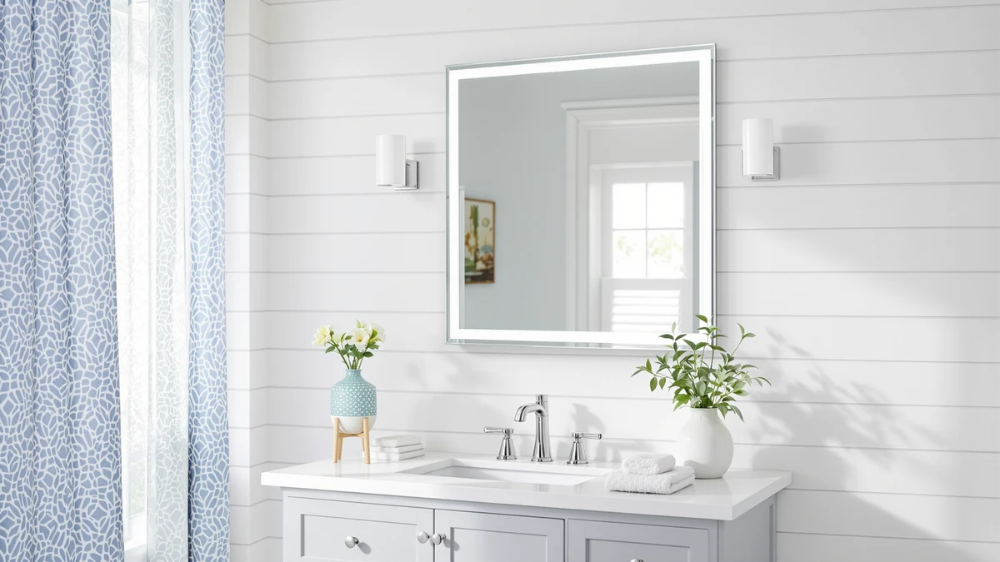

Kohler CB-CLC2026FS Frameless Bathroom Mirror Review (2026): Worth It?
Prices and picks verified as of November 2026. Independent, reader-supported reviews.


Quick Answer
For this kohler cb-clc2026fs frameless bathroom mirror review, we compared the $156.21 KOHLER CB-CLC2026FS against the $149.99 USHOWER 2-Pack, the $149.99 LOAAO gold mirror, and the $148.99 Snughome medicine cabinet on size, build, and price. The Kohler costs a few dollars more than all three, but it is the only frameless single mirror in the group sized for a standard single-sink vanity.
Our pick: Kohler CB-CLC2026FS Frameless Bathroom Mirror — $156.21 Check Price on Amazon
Bottom line: our top pick is the Kohler CB-CLC2026FS Frameless Bathroom Mirror Medicine Cabinet at $156.21.
Things to Know Before You Buy
- Size and fit: at 20 inches wide by 26 inches tall, the Kohler CB-CLC2026FS frameless bathroom mirror fits a single-sink vanity, so measure your wall run before you order.
- Build: tempered glass with an aluminum back gives it a plain frameless edge, without the gold frame or built-in storage some alternatives add.
- Price: at $156.21, it costs a few dollars more than the $149.99 USHOWER and LOAAO picks and the $148.99 Snughome cabinet in this comparison.
- Reviews: Amazon has not published an aggregate rating or review count for this listing, so we leaned on spec comparison rather than a buyer track record.
- Installation: the aluminum backing keeps it light enough for one installer to hang with standard mirror clips.
This kohler cb-clc2026fs frameless bathroom mirror review compares the KOHLER CB-CLC2026FS against the USHOWER 2-Pack, the LOAAO 40x30 gold mirror, and the Snughome medicine cabinet on price, size, and build. All three alternatives compete for the same spot above a bathroom vanity: a two-mirror bundle, a larger gold-framed mirror, and a storage cabinet.
After comparing specs and pricing across all four, the Kohler CB-CLC2026FS frameless bathroom mirror comes out as the strongest pick for a single-sink vanity that wants a plain, unframed edge, even though it is not the cheapest of the group. That verdict comes down to what the tempered glass and aluminum build gets you, how the $156.21 price stacks up against the three alternatives, and which bathrooms fit this mirror best.
Why You Should Trust Us
Ilane Tall covers bathroom fixtures and vanity hardware for Best Bathroom Mirrors, and this Kohler CB-CLC2026FS frameless bathroom mirror review follows the same process used across the site. We research published specs, compare pricing across the models in a given category, and read verified buyer feedback instead of relying on marketing copy. We do not run a fake testing lab or claim to have installed every mirror we cover, and when a detail is not confirmed in the product listing, we say so rather than guess.
For a mirror purchase, that means we pull the listed dimensions, materials, and current price for every model in a comparison, note the date those prices were checked, and flag when a seller has not published a rating or review count. Readers shopping for a frameless bathroom mirror deserve to know where each claim comes from, the manufacturer spec sheet, a verified owner, or something we flagged as unconfirmed.
Our Research Experience
Because this is a research-based review, our process for this Kohler CB-CLC2026FS frameless bathroom mirror review centers on comparing manufacturer specs, mounting requirements, and pricing rather than installing the mirror ourselves. We checked how the tempered glass and aluminum frame on the Kohler CB-CLC2026FS stacks up against the USHOWER, LOAAO, and Snughome alternatives, then lined up pricing across all four, from $148.99 to $156.21. A mirror in this size class is light enough for one installer to hang with standard mirror clips, so the extra labor cost that comes with larger double-vanity mirrors does not apply here.
We also compared the Snughome medicine cabinet against the three flat mirrors in this group, since it competes for similar wall space at $148.99 but adds enclosed storage instead of a plain reflective surface. Storage versus a plain mirror surface is the main trade-off to weigh for shoppers in the frameless bathroom mirror category, and we flagged that choice rather than treating the two product types as interchangeable.
Overview & Specs

Kohler CB-CLC2026FS Frameless Bathroom Mirror
What we like
- The frameless tempered glass edge gives it a cleaner look than the gold-framed LOAAO alternative
- Aluminum backing keeps it light enough for one installer to hang with standard mirror clips
- Kohler is a recognized bathroom fixture brand, which carries more weight than the USHOWER or Snughome listings in this lineup
Flaws but not dealbreakers
- At $156.21 it costs a few dollars more than the USHOWER, LOAAO, and Snughome alternatives, with no lighting or storage to offset the premium
- No published Amazon rating or review count on this listing, so there is less buyer feedback to draw on
- At 20 by 26 inches, it is the smallest wall mirror in this comparison, so it will not suit a double-sink vanity
| Material | Tempered glass + aluminum |
| Size | 20 in. x 26 in. |
The Kohler CB-CLC2026FS is in this frameless bathroom mirror review mainly for its simplicity and build. At 20 inches wide and 26 inches tall, it fits a standard single-sink vanity without the bulk of the 40 by 30 inch LOAAO alternative, and the tempered glass edge skips the gold frame or plastic trim other mirrors in this lineup use. The aluminum backing feels sturdier than the thinner mounting hardware sold with some budget mirrors, and because it is a plain mirror, you are not paying for a cabinet or frame you might not need.
Price and size narrow who it works for. This mirror runs $156.21, a few dollars past the USHOWER 2-Pack, the LOAAO, and the Snughome cabinet, and Amazon has not yet published a rating or review count for this specific listing, so you are weighing spec sheets rather than a long track record of verified buyers. The 20 by 26 inch size also commits you to a single-sink layout, so a double-sink vanity will need a larger mirror or a second unit. If your bathroom is a straightforward single-sink setup and you want one plain frameless mirror from a known brand, this is a reasonable pick. If you need more coverage or built-in storage, the alternatives below are worth a look first.
What We Liked
This Kohler CB-CLC2026FS frameless bathroom mirror review turns up one clear strength: the plain frameless edge. A tempered glass mirror without a visible frame is a cleaner look for a modern single-sink vanity, and paired with the aluminum backing it feels more substantial than the thin plastic trim sold on some budget mirrors. Kohler's name also carries more weight in bathroom fixtures than the USHOWER or Snughome listings it competes against here.
The aluminum backing also keeps the mirror light enough for a single installer to level and hang with standard mirror clips, which matters more to renters and DIYers than it does on heavier framed mirrors. Compared with the Snughome medicine cabinet at a similar price, the Kohler mirror trades storage for a larger uninterrupted reflective surface, and for a focal-point mirror above a renovated vanity, that trade makes sense.
What Could Be Better
Price parity is the clearest drawback. This Kohler frameless bathroom mirror runs $156.21, putting it a few dollars past the USHOWER, LOAAO, and Snughome alternatives, and that gap is hard to justify on a plain frameless edge alone without a published Amazon rating to back it up. The 20 by 26 inch size also narrows who it works for, since it reads as compact next to the LOAAO's 40 by 30 inch footprint.
Because the listing has no review count yet, you are taking on more of the buying risk yourself than you would with a mirror that already has hundreds of verified owner ratings. If that uncertainty matters more to you than the plain frameless look, the LOAAO or USHOWER alternatives give you comparable size or a two-mirror bundle for a few dollars less while you wait for more reviews to accumulate on this listing.
Who Is It For?
This mirror makes the most sense for homeowners with a single-sink vanity who want a plain frameless look instead of the gold frame or cabinet door that the alternatives in this comparison use, and who are comfortable paying a small premium for the Kohler name. For a straightforward bathroom remodel where a clean glass edge is part of the plan, the CB-CLC2026FS fits the brief.
Renters and anyone furnishing a double-sink vanity should weigh the size before buying, since 20 by 26 inches covers one sink at most. A primary bathroom with a single vanity and no need for built-in storage is where this frameless bathroom mirror review points most clearly, and the USHOWER, LOAAO, or Snughome alternatives below are worth comparing if your layout differs.
Alternatives to Consider
If the price, size, or plain frameless look of the Kohler CB-CLC2026FS does not fit your bathroom, these three alternatives cover a two-mirror bundle, a larger gold-framed mirror, and a medicine cabinet with built-in storage.

Also Great
USHOWER 2-Pack Frameless Bathroom Mirrors
Two frameless mirrors for $149.99, a few dollars less than the single Kohler pick, worth considering if you need mirrors for two bathrooms or want a backup for a double-sink vanity instead of one larger piece.
$149.99
Check Price on Amazon
Also Great
LOAAO 40"X30" Gold Bathroom Mirror
A larger 40 by 30 inch mirror for $149.99 that trades the Kohler's frameless edge for a gold frame, a better fit if you need more coverage for a double-sink vanity and prefer a warmer finish.
$149.99
Check Price on Amazon
Best Value
Snughome Bathroom Medicine Cabinet with
Swaps the plain mirror for a medicine cabinet with enclosed storage at $148.99, the pick if storage behind the glass matters more to you than a frameless look.
$148.99
Check Price on AmazonFrequently Asked Questions
Is the Kohler CB-CLC2026FS frameless bathroom mirror worth the price?
At $156.21, the Kohler CB-CLC2026FS costs a few dollars more than the $149.99 USHOWER and LOAAO picks and the $148.99 Snughome cabinet in this lineup. It is worth it if you want a plain frameless mirror from a recognized brand and do not need built-in lighting or storage. If price is your main concern, the Snughome or either $149.99 alternative gets you close to the same wall space for less.
What size wall space does the Kohler CB-CLC2026FS need?
The mirror measures 20 inches wide by 26 inches tall, so it fits a single-sink vanity rather than a double-sink wall. Measure your wall run before you buy, especially if nearby outlets or light fixtures limit how far the mirror can sit from the sink.
How does the Kohler CB-CLC2026FS compare to the USHOWER, LOAAO, and Snughome alternatives?
The USHOWER 2-Pack gives you two frameless mirrors for $149.99, useful if you need mirrors for two bathrooms instead of one larger piece. The LOAAO is a bigger 40 by 30 inch mirror for $149.99, but it swaps the frameless edge for a gold frame. The Snughome is a $148.99 medicine cabinet, the pick if you want enclosed storage behind the glass instead of a plain mirror.
Final Verdict
This Kohler CB-CLC2026FS frameless bathroom mirror review comes down to a simple trade. The Kohler costs a few dollars more than the USHOWER, LOAAO, and Snughome alternatives, but it is the only plain frameless single mirror in the group sized for a standard single-sink vanity. If you want that clean glass edge and trust the Kohler name, it is the pick. If you need more coverage, a warmer frame, or built-in storage, the alternatives above are worth checking first.